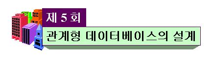

 |
||||||||||||||||||||||||||||||||||||||||||||||||||||||||||||||||||||||||||||||||||||||||||||||||||||||||||||||||||||||||||||||||||||
목 차
|
시작하기전에....제 5 회 "관계형 데이터베이스의 설계" 강의는 제 2 회 "데이터베이스 설계란 무엇인가"와 제 4 회 "데이터 이상과 정규화"를 최종 연결하는내용을 다루고 있습니다. 따라서, 제 2 회 강의 내용과 제 3 회 강의 내용이 어떻게 절차적으로 이용되는가에 대해 궁금해 했던 수강생들은 본 강의에서 그 궁금증이 해결될 것입니다. 본 강의에서 여러분들은 ER 모델을 이용하여 개념적 설계한 결과를 어떻게 관계형 데이터베이스 릴레이션 스키마로 변환 하는지를 주시하면서 다음 사항들을 학습하길 바랍니다.
|
|||||||||||||||||||||||||||||||||||||||||||||||||||||||||||||||||||||||||||||||||||||||||||||||||||||||||||||||||||||||||||||||||||
본 강의에서는 개념적 설계로부터 관계형 데이터베이스의 논리적 설계에 이르기 까지의 전 과정을 절차적으로 소개한다. 개념적 설계를 위해 "제 2 회 데이터베이스 설계란 무었인가 ?"에서 이미 소개된 개념적 모델인 ER 모델을 이용할 것이다. 관계형 데이터베이스에서 논리적 설계란 개념적 설계의 결과로부터 관계형 릴레이션 스키마들을 도출해내는 과정이다. 여러분들은 개념적 설계 단계에서 실세계로부터 실세계를 구성하는 구성요소, 구성요소 특성, 구성요소들 사이에 존재하는 관계 등을 표현하는 개념적 모델링에 대하여 이미 학습한 바 있다(개념적 모델링의 단계적 과정에 대한 지식이 부족하다고 느끼는 수강생들은 "제 2 회 데이터베이스 설계란 무었인가 ?"를 재학습하길 바란다). "제 4 회 데이터 이상과 정규화"에서 관계형 데이터베이스의 논리적 설계에 관한 정확한 언급은 없었지만 사실 상 정규화 과정은 관계형 데이터베이스의 논리적 설계 일부분이다. 그러나, 개념적 모델링에 의해 도출된 결과를 이용하여 관계형 데이터베이스 릴레이션 스키마들을 도출하는 방법론에 대해서는 여러분들에게 소개되지 않았기 때문에 이에 대한 방법론이 본 강의에서 소개될 것이다. 그러므로 개념적 설계 결과를 토대로 관계형 데이터베이스 릴레이션 스키마들을 도출하는 과정을 제외하고는 개념적 설계 과정과 정규화 과정을 통한 논리적 설계 과정 일부에 대하여 여러분들은 이미 학습한 것이다. 그럼에도 불구하고 아마도 수강생 여러분들은 개념적 설계를 어떻게 행하고 그 설계 결과를 어떻게 관계형 데이터베이스의 논리적 설계에 이용하며 도대체 정규화를 논리적 설계 시 어디에 이용하는지에 대해 의아해 할 것이다. 이러한 의구심은 당연한 것이며 본 강의는 이러한 의구심을 해결함과 아울러 개념적 설계 과정과 관계형 데이터베이스의 논리적 설계 과정의 단계적 흐름을 일관성있게 여러분들에게 제시하는데 그 목적을 두고 있다. 따라서 여러분들은 개념적 설계 과정과 관계형 데이터베이스의 논리적 설계 과정과의 연관성을 주시하면서 본 강의에 임해주길 바란다. 1. 데이터베이스 설계시 고려 사항
"제 2 회 데이터베이스 설계란 무엇인가 ?"에서 이미 설명한 바와 같이 데이터베이스 설계는 개념적 설계, 논리적 설계, 그리고 물리적 설계로 분류되며 설계 절차 또한 언급된 순서대로 행한다. 본 강의에서는 관계형 데이터베이스 설계에 촛점을 맞추고 있기 때문에 각 단계별 설계시 고려 사항에 대하여 언급하기 보다는 물리적 설계를 제외한 개념적 설계와 논리적 설계시의 고려사항에 대하여 간단하게 언급하고자 한다. 1.1 개념적 설계시 고려사항개념적 설계 단계는 실세계로부터 실세계를 구성하는 구성요소, 구성요소 특성, 구성요소들 사이에 존재하는 관계 등을 표현하는 단계이기 때문에 이와 관련하여 고려해야 할 사항들을 살펴보면 다음과 같다.
1.2 논리적 설계시 고려사항개념적 설계가 실세계를 인간의 개념적 입장에서 표현하는 과정이라면 논리적 설계는 DBMS(데이터베이스 관리 시스템)가 사용하는 데이터 모델 측면에서 표현하는 과정이다. 이러한 측면에서 논리적 설계시 고려해야 할 사항들을 살펴보면 다음과 같다.
2. 관계형 데이터베이스 설계 단계
실세계를 데이터베이스로 반영하기 위한 설계절차는 개념적 설계, 논리적 설계, 물리적 설계 등으로 이미 "제 2 회 데이터베이스 설계한 무었인가 ?"에서 설명한 바 있다. 또한 ER 모델을 이용한 개념적 설계 방법에 대해서도 설명한 바 있다. 본 강의 에서는 ER 모델을 이용한 개념적 설계 절차를 포함하여 관계형 데이터베이스 스키마로 논리적 설계하는 단계를 다음 그림 5-1과 같이 제시한다.
위의 그림 5-1에 대하여 실세계 정의, 개념적 설계, 논리적 설계 부분으로 나누어 각 부분에 대한 단계들을 설명하면 다음과 같다. 2.1 실세계 정의단계 1. 실세계를 문장으로 자연스럽게 정의한다.실세계를 문장으로 나타내는 단계이다. 실세계의 구성요소들과 이들간의 관계를 자연스럽게 문장으로 표현한다. 꼭 필요한 구성요소 속성도 문장으로 언급하도록 한다. 또한, 실세계에 존재하는 규칙들도 문장으로 표현하도록 한다. 이 규칙에는 대응수(cardinality)에 대한 내용도 포함되어야 한다. 실세계 정의는 개체(entity)나 관계성(relationship) 차원이 아닌 개체 집합(entity set)과 관계성 집합(relationship ser) 차원에서 문장으로 서술하도록한다. 이렇게 개체 집합과 관계성 집합 차원에서 서술하는 이유는 논리적 설계의 릴레이션 스키마는 개체 차원에서 이루어지지 않고 개체 집합 차원에서 이루어지기 때문이다. 실세계나 개념적 설계의 개체집합과 관계성 집합은 관계형 데이터베이스의 릴레이션으로 표현된다. 이 단계에서 문장으로 자연스럽게 표현되어야 할 요소들은 다음과 같다.
실세계를 문장으로 표현하는 이유는 이 문장을 바탕으로 하면 개념적 설계가 더 수월해 지기 때문이다. 2.2 ER 모델을 이용한 개념적 설계ER 모델을 이용한 개념적 설계 부분은 이미 "제 2 회 데이터베이스 설계한 무었인가 ?"에서 구체적으로 설명되었으므로 여러분들은 이 부분을 다시 참고하길 바란다. 본 강의에서는 설명없이 단계만 표시하기로 한다.ER 모델을 이용한 개념적 설계는 단계 1.의 실세계 정의를 바탕으로 문장 하나 하나를 파악함으로써 행한다. 일반적으로 문장 중에 나타나는 명사들은 대부분 개체 집합을 나타내며 동사를 비롯한 술어들은 관계성 집합을 나타낸다. 명사를 수식하는 형용사 등의 수식어는 일반적으로 속성에 해당한다. 이를 중심으로 다음 단계들을 행한다. 단계 2. 실세계를 구성하는 개체 집합을 식별하고 표현한다.단계 3. 각 개체집합이 강성 개체인지 약성 개체인지를 구분하고 표현한다.단계 4. 각 개체 집합의 속성을 식별하고 표현한다.단계 5. 실세계로부터 개체 집합들 사이에 존재하는 관계성 집합을 식별하고 표현한다.단계 6. 실세게 정의의 제약사항으로부터 관계성 집합에 관련된 개체 집합들 사이의 대응수(cardinality)를 식별하고 표현한다.단계 7. 관계성 집합이 갖는 속성들을 식별하고 표현한다.단계 8. 실세계 정의로부터 제약 사항을 식별하여 ER 모델로 반영하거나 ER 모델로 반영할 수 없는 제약 사항은 문장으로 정리하여 나열한다.실세계 정의 문장 중에서 제약사항에 해당하는 부분을 식별해야 한다. 식별된 제약사항들을 모두 ER 모델로 반영할 수 있는 것은 아니다. 단계 6의 대응수는 ER 모델로 표현할 수 있지만 개체가 개체 집합에 속할 조건이나 참조 무결성을 유지하기 위한 조건, 속성들간에 존재하는 조건 등은 ER 모델로 표현할 수 없으며 이 조건들은 트랜잭션에 반영되어야 할 부분이다. 트랜잭션 설계시 이 제약조건들을 반영하기 위해 문장으로 정리하도록 한다. 2.3 관계형 데이터베이스의 논리적 설계논리적 설계는 개념적 설계 결과로 만들어진 ER 다이어그램을 기반으로 행한다. 관계형 데이터베이스의 논리적 설계는 ER 다이어그램을 관계형 데이터베이스의 릴레이션 스키마로 변환하고 각 릴레이션 스키마를 대상으로 정규화를 거침으로써 이루어진다. 이에 대한 자세한 설명은 다음과 같다. 단계 9. ER 다이어그램을 릴레이션 스키마로 변환하고 변환된 릴레이션 스키마에 대한 주키이를 설정한다.ER 다이어그램을 릴레이션 스키마로 변환하는 방법과 각 릴레이션 스키마의 주키이 설정은 다음의 규칙들에 따라 행하며 다음 그림 5-2를 중심으로 각 규칙들을 자세히 설명하도록 한다.
1. 개체 집합의 변환규칙 1. ER 다이어그램에서 각 강성 객체 집합은 하나의 독립된 릴레이션 스키마로 대응시키고 ER 다이어그램에서 강성 객체 집합에 연결된 속성은 대응하는 릴레이션 스키마의 속성이 되도록 한다. 릴레이션 스키마의 명칭은 객체 집합 명칭을 기준으로 정한다. 이렇게 변환된 릴레이션 스키마로부터 주키이를 설정한다. 위의 그림 5-2의 ER 다이어그램에서 에서 강성 객제 집합은 단일 사가형으로 표시된 E1, E3, E4, E5, E6이며 규칙 1에따라 각 객체 집합에 연결된 속성들을 포함시켜 다음 표 5-1과 같이 각각 E1-Schema, E3-Schema, E4-Schema, E5-Schema, E6-Schema 등으로 명명 및 정의된다.
주키이는 위 릴레이션 스키마의 속성들을 중심으로 정해야 하며 위의 표 5-1에서 각 릴레이션 스키마의 주키이는 표 5-1과 같이 주어졌다고 가정한다. 규칙 2. ER 다이어그램에서 각 약성 객체 집합은 그 개체 집합을 결정하는 강성 개체 집합에 의해 그 존재가 식별되기 때문에 단독으로 릴레이션 스키마로 변환될 수 없다. 따라서 약성 개체 집합을 릴레이션 스키마로 변환하기 위해서 그 개체 집합을 결정하는 강성 개체 집합의 주키이를 외래 키이로 하고 ER 다이어그램에서 연결된 속성들을 합쳐서 릴레이션 스키마로 변환한다. 약성 개체 집합에서 변환된 릴레이션 스키마의 주키이는 이 외래 키이를 포함하도록 설정한다. 즉, ER 다이어그램에서 약성 개체 집합 Ew의 속성이 Ai,Aj,...,Ak 이고 강성 개체 집합 Es의 주키이가 {Al,Am,...,An} 일 때 약성 개체 집합 Ew에 대응하는 릴레이션 스키마 Ew-Schema는 다음과 같이 정한다.
따라서 , 변환된 릴레이션 스키마는 Ew-Schema(Ai,Aj,...,Ak,Al,Am,...,An)이다. 또한,약성 개체 집합에 속하는 약성 개체는 이를 결정해주는 강성 개체가 없이는 구별될 수 없다. 두 개체 집합 대학교와 학과를 예로들어 보자. 대학교가 없이는 학과 단독으로는 존재할 수 없기 때문에 학과 개체 집합은 약성 개체 집합이 되며 대학교 개체 집합은 학과 개체 집합의 강성 개체 집합이 된다. 따라서 우리가 컴퓨터학과라고 말할 때는 아무런 의미가 없다. 그 이유는 컴퓨터학과를 가지고 있는 대학교 개체가 여러개 존재하므로 구별되지 않기 때문이다. 그러나, OCU의 컴퓨터학과라고 했을 때 OCU에 속하는 컴퓨터학과로서 구별되게 된다. 즉, 약성 개체 집합의 개체는 이를 결성해주는 강성 개체 집합의 개체에 의해 구분된다. 이러한 이유로 약성 개체 집합의 주키이는 강성 개체 집합의 주키이를 포함해야 하는 것이다. 따라서, 약성 개체 집합에 대응하는 릴레이션 스키마 Es-Schema 주키이 K 는 다음의 형태를 취한다. K = Es의 주키이∪{Ai', Aj',..,Ak'}={Al,Am,...,An,Ai', Aj',..,Ak'} 여기에서 {Ai', Aj',..,Ak'}⊆{ Ai,Aj,...,Ak } 이다. 그림 5-2의 ER 다이어그램에서 이중 사각형의 표현된 개체 집합 E2가 약성 개체 집합이며 이 개체 집합을 결정하는 강성 개체 집합은 E1이다. E2의 속성은 A21,A22,A23이고 E1의 주키이는 {A11,A12}이므로 변환되는 릴레이션 스키마 E2-Schema의 속성들은 이들을 합하여 생성된 A21,A22,A23,A11,A12들이며 이중에서 E1의 주키이는 {A11,A12}는 E2-Schema의 외래키이가 된다. 또한 이 릴레이션 스키마의 주키이는 이 외래키이를 포함하여 표 5-2와 같이 가정하였다.
2. 관계성 집합의 변환ER 다이어그램의 관계성 집합을 릴레이션 스키마로 변환하는 방법은 관계성 집합에 관련된 개체 집합들의 개수나 대응수에 따라 다르다. 이에 대한 설명을 단순화하기 위해 몇가지 기호에 대한 약속을 정하기로 하자. ER 다이어그램에서 E1, E2,..., En를 각각 개체 집합이라 하고 R을 관계성 집합이라 한다. 또한, E1-Schema, E2-Schema,..., En-Schema를 각각 개체 집합 E1, E2,..., En의 변환된 릴레이션 스키마라 하고 K1, K2,..., Kn를 각각 E1-Schema, E2-Schema,..., En-Schema의 주키이라 한다. 규칙 3. ER 다이어그램에서 관계성 집합 R이 두 개체 집합 E1과 E2 사이에 존재하면서 대응수(cardinality)가 1 : 1 일 때, E2-Schema에 E1-Schema의 주키이 K1을 외래 키이로 포함시킴과 동시에 R의 속성을 포함시키거나, 혹은 역으로 E1-Schema에 E2-Schema의 주키이 K2을 외래 키이로 포함시킴과 동시에 R의 속성을 포함시킴으로써 두 릴레이션 스키마 중의 한 스키마를 변환시킨다. 즉, 다음 둘 중의 한 변환만을 수행한다. E2-Schema = E2-Schema ∪ K1 ∪ R의 속성집합, 혹은, E1-Schema = E1-Schema ∪ K2 ∪ R의 속성집합
규칙 4. ER 다이어그램에서 관계성 집합 R이 두 개체 집합 E1과 E2 사이에 존재하면서 대응수(cardinality)가 1 : n 일 때 즉, 개체 집합 E1의 한 개체에 대해 개체 집합 E2 에서 한 개이상의 개체가 대응될 때, 개체 집합 E2에 대응되는 E2-Schema에 E1에 대응되는 E1-Schema의 주키이 K1을 외래 키이로 포함시킴과 동시에 관계성 집합 R의 속성들도 포함시킴으로써 E2-Schema를 변환시킨다. 즉, 다음 변환을 수행한다. E2-Schema = E2-Schema ∪ K1 ∪ R의 속성집합 그림 5-2의 ER 다이어그램에서 규칙 3의 조건, 즉 두 개체 집합 사이에 존재하면서 대응수가 1 : n 인 조건을 만족하는 관계성 집합은 R1과 R3 두 개이다. 그림 5-2의 ER 다이어그램에서 R1의 속성은 AR11이고, R1에 관련된 개체 집합은 각각 E1, E2 이며 E1과 E2 사이의 대응수는 1 : n 이므로 E1에 대응하는 표 5-1의 릴레이션 스키마 E1-Schema(A11, A12, A13)의 주키이 {A11,A12}와 R1의 AR11을 E2에 대응하는 표 5-2의 릴레이션 스키마 E2-Schema(A11, A12, A21, A22, A23) 에 포함시켜야 한다. 그러나 E1은 E2의 강성 개체 집합으로서 이미 규칙 2에 의해 E1-Schema(A11, A12, A13)의 주키이 {A11,A12}가 이미 E2-Schema(A11, A12, A21, A22, A23) 에 포함되어 있으므로 릴레이션 스키마 E2-Schema에는 R1의 속성 AR11만 포함된다. 따라서, 릴레이션 스키마 E2-Schema는 E2-Schema(A11, A12, A21, A22, A23, AR11) 로 변환된다. 한편, 그림 5-2의 ER 다이어그램에서 R3의 속성은 AR31이고, R3에 관련된 개체 집합은 각각 E3, E4 이며, E3와 E4 사이의 대응수는 1 : n 이므로, E3에 대응하는 표 5-1의 릴레이션 스키마 E3-Schema(A31, A32)의 주키이 {A31}와 R3의 속성 AR31을 E4에 대응하는 릴레이션 스키마 E4-Schema(A41, A42, A43) 포함시켜야 한다. 따라서 E4-Schema 릴레이션 스키마는 E4-Schema(A31, A41, A42, A43, AR31)로 변환된다. 규칙 4까지 적용한 후의 변환된 렐레이션 스키마는 다음의 표 5-3과 같다.
규칙 5. ER 다이어그램에서 관계성 집합 R이 두 개체 집합 E1과 E2 사이에 존재하면서 대응수(cardinality)가 n : m 일 때 즉, 개체 집합 E1의 한 개체에 대해 개체 집합 E2 에서 한 개이상의 개체가 대응되고 역으로 개체 집합 E2의 한 개체에 대해 개체 집합 E1 에서 한 개이상의 개체가 대응될 수 있을 때, E1-Schema의 주키이 K1과 E2-Schema의 주키이 K2, 그리고 R의 속성집합의 속성들로 이루어진 새로운 릴레이션 스키마 R-Schema를 생성한다. 또한, R-Schema의 주키이는 K1 ∪ K2 이 되며, K1과 K2는 각각 R-Schema의 외래 키이들이 된다. 즉, R-Schema = K1 ∪ K2 ∪ R의 속성집합, R-Schema의 주키이 = K1 ∪ K2 , R-Schema의 외래 키이는 K1 과 K2, 그림 5-2의 ER 다이어그램에서 규칙 5의 조건, 즉 두 개체 집합 사이에 존재하면서 대응수가 n : m인 조건을 만족하는 관계성 집합은 R2 이다. R2에 관련된 개체 집합은 E2와 E3이고 이 개체 집합에 대응되는 릴레이션 스키마는 각각 E2-Schema, E3-Schema이며 R2의 속성은 AR21, AR22 이므로 규칙 5를 적용하여 새로운 릴레이션 스키마 R3-Schema를 생성하면
이므로 R3-Schema(A11,A12,A21,A31,AR21, AR22)를 얻게 된다. 또한, R3-Schema의 주키이는 K2 ∪ K3 = {A11,A12,A21}∪{A31} = {A11,A12,A21,A31}이 되며, {A11,A12,A21}와 {A31}는 각각 R3-Schema의 외래 키이들이 된다. 규칙 5까지 적용한 후의 렐레이션 스키마들은 표 5-3에 R3-Schema를 첨가한 아래의 표 5-4와 같다.
규칙 6. ER 다이어그램에서 관계성 집합 R이 셋 이상의 개체 집합 E1, E2, ..., En 사이에 존재할 때, E1-Schema의 주키이 K1, E2-Schema의 주키이 K2, ..., , En-Schema의 주키이 Kn 그리고 R의 속성집합의 속성들로 이루어진 새로운 릴레이션 스키마 R-Schema를 생성한다. 또한, R-Schema의 주키이는 K1 ∪ K2 ∪...∪ Kn 이 되며, K1, K2, ..., Kn은 각각 R-Schema의 외래 키이들이 된다. 즉, R-Schema = K1 ∪ K2 ∪...∪ Kn ∪ R의 속성집합, R-Schema의 주키이 = K1 ∪ K2 ∪...∪ Kn, R-Schema의 외래 키이들은 K1, K2, ..., Kn 그림 5-2의 ER 다이어그램에서 규칙 6의 조건, 즉 셋 이상의 개체 집합 사이에 존재하는 관계성 집합은 R4 이다. R4에 관련된 개체 집합은 E3, E5, E6이고 이 개체 집합에 대응되는 릴레이션 스키마는 각각 E3-Schema, E5-Schema, E6-Schema이며 R4의 속성은 없으므로 규칙 6를 적용하여 새로운 릴레이션 스키마 R4-Schema를 생성하면
이므로 R4-Schema(A31,A52,A61,A62)를 얻게 된다. 또한, R4-Schema의 주키이는 K3 ∪ K5 ∪ K6 = {A31}∪ {A51}∪ {A61, A62} = R4-Schema(A31,A52,A61,A62)이 되며, {A31}, {A51}, {A61, A62}는 각각 R4-Schema의 외래 키이들이 된다. 규칙 6까지 적용한 후의 렐레이션 스키마들은 표 5-4에 R4-Schema를 첨가한 아래의 표 5-5와 같다. 표 5-5는 ER 다이어그램을 릴레이션 스키마로 변환한 최종 결과이다.
단계 10. ER 다이어그램으로부터 변환된 각 릴레이션 스키마에 대하여 정규화를 행한다.ER 다이어그램으로부터 변환된 각 릴레이션 스키마들은 일반적으로 제 3 정규형에 존재하게 된다. 그러나, ER 모델을 이용한 개념적 설계시 실세계의 구성요소와 속성의 단위를 잘못 식별하게 되면 반복 그룹(repeating group)이 발생하거나 속성 도메인이 원자성(atomicity)을 갖게 될 가능성이 있고, 함수적 종속성(functional dependency)을 고려함이 없이 개체 집합의 속성을 식별했기 때문에 속성 개체 집합의 속성들 사이에 부분적인 함수 종속성(partially functional dependency)이 존재하거나 전이 종속성(transtive dependency)이 발생할 가능성도 존재한다. 이러한 이유 때문에 ER 다이어그램으로부터 변환된 각 릴레이션 스키마에 대하여 정규화를 행할 필요가 있다. 정규화를 진행하는 절차는 다음과 같다. 절차 1. 각 릴레이션 스키마에 대하여 함수적 종속성들을 식별한다. 함수적 종속성은 실세계에 존재하는 상식, 규칙 등으로부터 유추된 제약 사항을 근거로 릴레이션 스키마로부터 식별한다. 절차 2. 절차 1에서 식별된 함수적 종속성들을 기준으로 정규화를 행한다. 각 릴레이션 스키마를 대상으로 다음 그림 5-3의 절차에 따라 정규화를 행한다.
위의 그림 5-3에서와 같이 각 릴레이션 스키마를 대상으로 단계별 정규형 검사를 행한다. 릴레이션 스키마가 해당 정규형에 존재하면 다음 단계의 정규형 검사를 행하고 그렇지 않을 경우에는 무손실 분해(lossless decomposition)를 행하여 릴레이션 스키마를 분해한 후 분해된 각 릴레이션 스키마를 대상으로 정규화를 행하기 위해 앞의 절차 1부터 다시 시작한다. 그림 5-3의 각 정규형 검사와 무손실 분해 방법은 "제 4 회 데이터 이상과 정규화"에서 제 5 정규형을 제외하고 이미 자세히 다루었으므로 본 강의에서는 언급하지 않기로 한다. 따라서 이에 대한 개념이 부족한 수강생 여러분들은 "제 4 회 데이터 이상과 정규화" 강의를 다시 참고하기 바란다.
|
||||||||||||||||||||||||||||||||||||||||||||||||||||||||||||||||||||||||||||||||||||||||||||||||||||||||||||||||||||||||||||||||||||